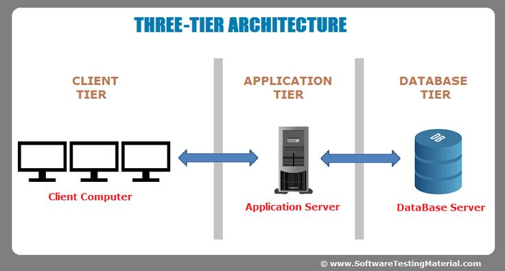

1.10 Multitier Architecture
Definition
A software architecture pattern that organizes applications into distinct layers, each with specific responsibilities and communication boundaries.

3-Tier Architecture
- Presentation Layer: User interface and user experience components.
- Application Layer: Business logic and application processing.
- Data Layer: Database management and data storage.
Common Protocols
- HTTP/HTTPS for communication between the presentation layer and application layer.
- JDBC/ODBC for communication between the application layer and data layer.
- RESTful APIs or SOAP for communication between layers in a service-oriented architecture.
Benefits
- Improved maintainability and scalability.
- Better separation of concerns.
- Enhanced security through layer isolation.
Functional role
- Allows for modular development and easier maintenance by separating different concerns into distinct layers.
- Facilitates scalability by allowing each layer to be scaled independently based on demand.
- Enhances security by isolating different layers, reducing the attack surface and allowing for better access control.